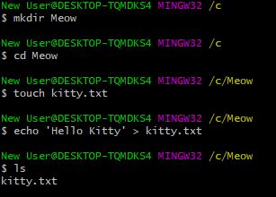
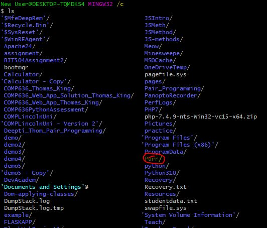
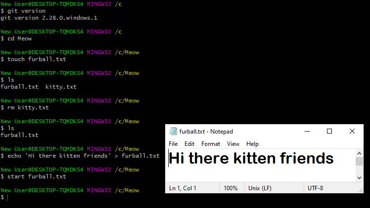
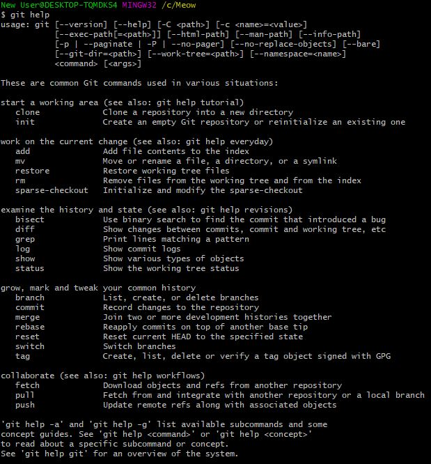

To create a file using Git Bash I used the command 'touch' followed by the name of the file I wanted to create. For instance, I created a file called kitty.txt by first creating a directory by entering the command 'mkdir Meow' and then creating the file by typing 'touch kitty.txt'. I then added some text to this file by entering the command 'echo "Hello Kitty!" > kitty.txt'. To view the file had been created, I entered the command 'ls' and I saw that it had been created on my computer. I opened it by entering the command 'start kitty.txt'.
After creating this kitty.txt file, I decided I wanted to delete it from the 'Meow' directory. This was achieved using the command line 'rm kitty.txt'. To confirm this had been performed, I entered the command 'ls' and I could see it was no longer inside the 'Meow' directory I had created.
I created another new text file in the 'Meow' directory. I named it 'furball.txt'. This was done using the 'touch' command folowed by the filename and the type of file I wanted to create. After a quick check using the 'ls' command I could see that the file existed in the directory. I then entered some text into it using the command 'echo "Hi there kitten friends' > furball.txt'. I then decided to stream or open the the file by entering the command 'start furball.txt'. The notepad file opened immediately and I could see what I had entered.
To navigate around files, I used the 'cd' or change directory command line. When I found a directory I wanted to open, I entered the 'cd' command followed by the folder or directory name. To see what was inside the directory, I would enter the 'ls' command. From there, I would select further folders using 'cd' command. To go back to a previous folder, I would often use the 'cd .. ' command. Or, I would use the 'cd' command and eneter the folder/directory name. I often used the 'ls' command as a guide to ensure I wouldn't get lost combing through files.
When I had forgotten commands or if I ever became confused, I frequently used the 'git help' command to provide me with a list of the commands available to help me navigate around the CLI.
